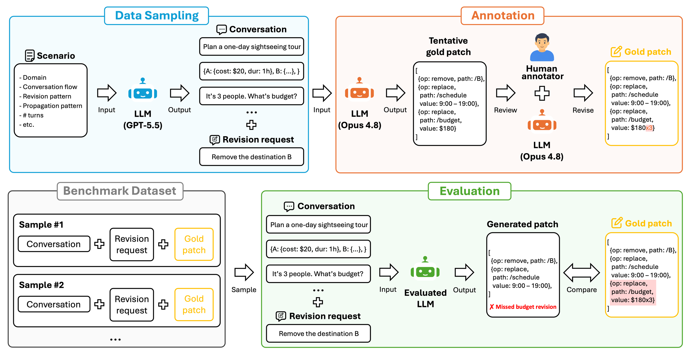
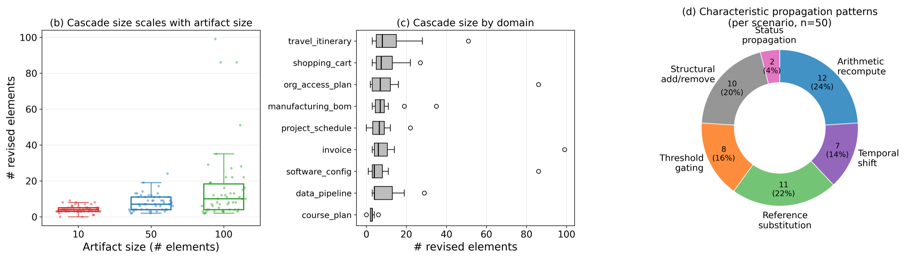
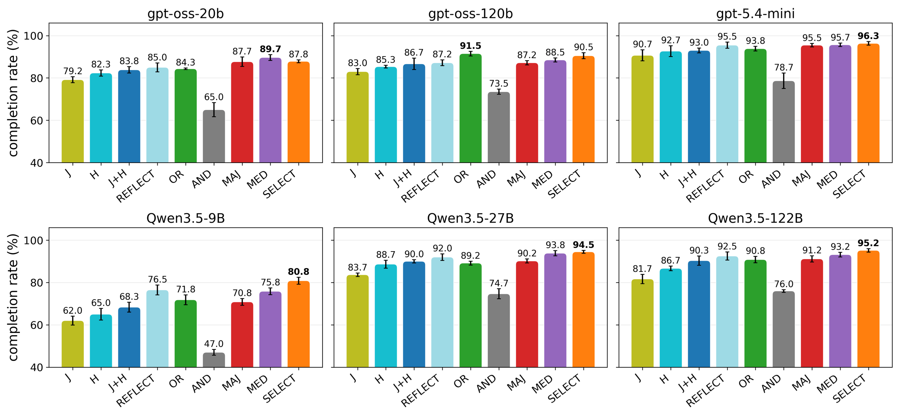
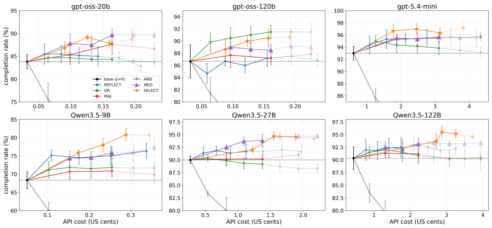

Abstract
Large Language Models (LLMs) often help users generate artifacts through iterative cycles of generation and revision in conversation. A challenge here is that, when users specify only a local change during revision, LLMs must instead identify the relevant dependencies and propagate the revision to all affected parts of the artifact. This paper studies this ability of LLMs on conversationally generated artifacts, where the artifact context and its dependencies may be embedded in the conversation history. Toward practical use, we also explore cost-effective test-time compute for this new setting. Specifically, we introduce a new benchmark for this setting, and evaluate nine revision methods, including sequential reflection and parallel sampling variants, using gpt-oss-20b/120b, gpt-5.4-mini, and qwen3.5-9b/27b/122b on the benchmark. The results show that baselines achieve accuracies of 68.3–93%, and the most cost-effective method is selecting from three parallel samples using either LLM-based or medoid selection, which improves accuracy by 2.2–9.7%.
Revision propagation. The user asks for a local change, but the schedule and budget depend on it. A correct revision must find those dependencies, which may be stated only in the conversation history, and update them too.
RevPropBench
Each sample has a multi-turn conversation that builds a JSON artifact, a revision request that names a single local change, and a human-verified gold JSON Patch. The gold patch holds the direct edit plus every field that must change as a consequence. Conversations are synthesized by an LLM from scenario skeletons. Gold patches are drafted by an LLM and then reviewed and revised by a human annotator.

Statistics
The benchmark has 150 samples, split into dev (30) and test (120). It covers 9 practical domains, 6 propagation patterns, and 3 artifact sizes (10 / 50 / 100 elements).

Evaluation Settings
We evaluate six LLMs with nine revision methods on the 120-case test split, and report the completion rate: the exact-match rate between the generated patch and the gold patch.
Models
We evaluate six LLMs from three families, all with reasoning enabled: five open-weight models and one commercial model.
gpt-oss Local
- gpt-oss-20b / 120b
- reasoning_effort = mid, temperature = 0.6
GPT-5.4 mini Commercial
- gpt-5.4-mini
- reasoning_effort = mid
Qwen3.5 Local
- qwen3.5-9b / 27b / 122b-a10b
- reasoning = true, temperature = 0.6
Revision methods
All methods share the same revision prompt and output a JSON Patch. They differ in the context they see and in how they spend extra LLM calls.
Single-call baselines
- J
- Current JSON only
- H
- Conversation history only
- J+H
- History + current JSON
Sequential reflection
- REFLECT
- A J+H revision followed by repeated review passes that check and refine the patch
Parallel sampling (J+H × k)
- OR / AND / MAJ
- Rule-based merge of the samples: union, unanimity, or strict majority per node
- MED
- Pick the medoid sample, i.e. the one closest to the others (no extra LLM call)
- SELECT
- One extra LLM call picks the best candidate
Results
Benchmark results
- Baselines achieve completion rates of 68.3–93%.
- Conversation history is critical for capturing conversationally established dependencies and element semantics (i.e., J < H < J+H).
- 1st: SELECT improves by 3.3–12.5pp, 2nd: MED improves by 1.8–7.5pp over J+H.
*Each test-time compute method uses 5 LLM calls.

Cost analysis
- We extend the number of samples and measure how performance scales.
- Performance begins to saturate at around 4–5 LLM calls.
- 3 samples are the most cost-effective for SELECT and MED (+1 selection call for SELECT).
- SELECT increases latency by 2–6×. If latency matters, MED offers a better trade-off, with only ~1.4× latency and ~1.4pp lower performance.

Conclusion
- We proposed a new benchmark for evaluating the ability of LLMs to propagate revisions across dependent elements in conversationally generated JSON artifacts.
- We evaluated nine revision methods with six LLMs on the benchmark, providing practical guidance for cost-effective method selection.
- Conversation history is critical for capturing conversationally established dependencies and element semantics.
- Test-time compute improves revision propagation accuracy, but performance begins to saturate at around 4–5 LLM calls.
- SELECT or MED with 3 samples is the most cost-effective.
Citation
If you find this work useful, please cite our paper as follows:
@inproceedings{kikuta-2026-else,
title = "What Else Needs Fixing? Exploring Cost-Effective Test-Time Compute for Revision Propagation in Artifacts Generated Through Conversation",
author = "Kikuta, Daisuke",
editor = "Atanasova, Pepa and
Haffari, Gholamreza and
Wang, Minghan",
booktitle = "Proceedings of the 2026 Conference on Empirical Methods in Natural Language Processing: Industry Track",
month = oct,
year = "2026",
address = "Budapest, Hungary",
publisher = "Association for Computational Linguistics",
url = "https://aclanthology.org/2026.emnlp-industry.246/",
pages = "4161--4177",
ISBN = "979-8-89176-460-6",
abstract = "Large Language Models (LLMs) often help users generate artifacts through iterative cycles of generation and revision in conversation. A challenge here is that, when users specify only a local change during revision, LLMs must instead identify the relevant dependencies and propagate the revision to all affected parts of the artifact. This paper studies this ability of LLMs on conversationally generated artifacts, where the artifact context and its dependencies may be embedded in the conversation history. Toward practical use, we also explore cost-effective test-time compute for this new setting. Specifically, we introduce a new benchmark for this setting, and evaluate nine revision methods, including sequential reflection and parallel sampling variants, using gpt-oss-20b/120b, gpt-5.4-mini, and qwen3.5-9b/27b/122b on the benchmark. The results show that baselines achieve accuracies of 68.3{--}93{\%}, and the most cost-effective method is selecting from three parallel samples using either LLM-based or medoid selection, which improves accuracy by 2.2{--}9.7{\%}. Our code and dataset are available at https://github.com/ntt-dkiku/llm-revision-propagation."
}